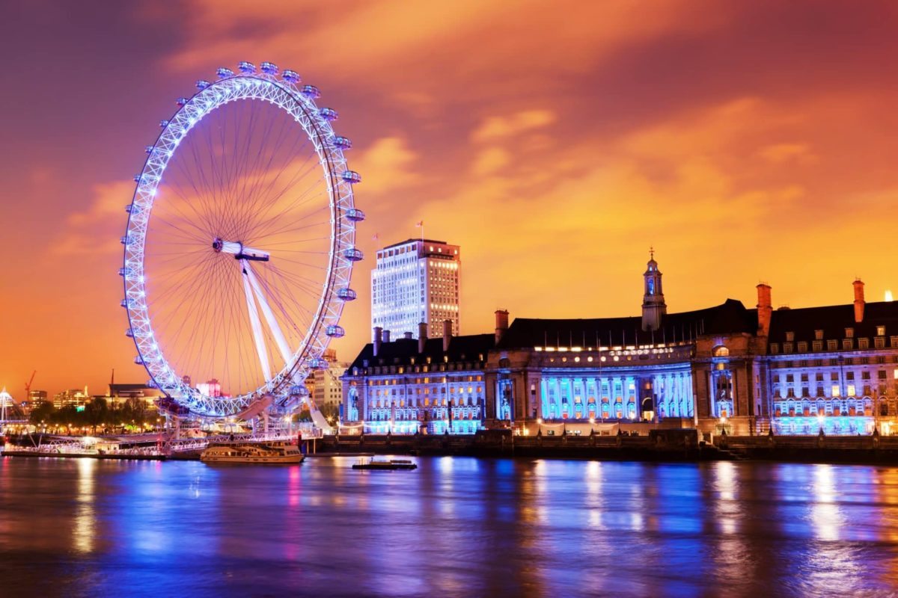
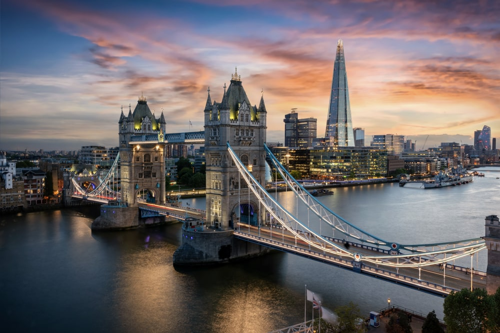

London Eye
Experience breathtaking 360° views of London from one of the city's most iconic attractions. From sunrise to night lights, every moment feels magical.
Mind the Gap — You’re About to Explore
Discover London's timeless beauty, culture, and iconic landmarks.

Experience breathtaking 360° views of London from one of the city's most iconic attractions. From sunrise to night lights, every moment feels magical.

The official residence of the British monarch and a symbol of royal heritage, hosting ceremonies and national celebrations.

A masterpiece of Victorian engineering, offering stunning views and a unique glass walkway experience.

Explore millions of works of art and history from across the globe in one of the world’s most famous museums.

A stunning architectural landmark featuring a massive dome and breathtaking city views from its galleries.

A vibrant hub of street food, fashion, and creativity—perfect for experiencing London’s alternative culture.

One of London’s most iconic landmarks, famous for its clock tower and historical significance.